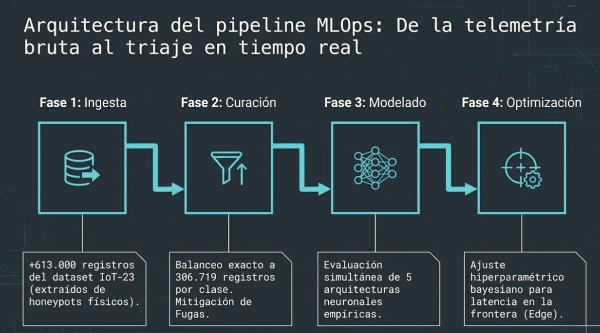

Detección de tráfico malicioso en dispositivos IoT con Deep Learning

Diseño e implementación de un algoritmo comparativo entre las cinco principales familias de arquitecturas de aprendizaje profundo para clasificar anomalías en redes de dispositivos IoT. Aprendí que la latencia y la rapidez de inferencia son factores tan críticos como la precisión para la viabilidad de estos modelos en entornos reales.
- Python
- PyTorch
- Pandas
- Scikit-learn